1. Fichas de Flores
Camelia (Camellia japonica) Invierno
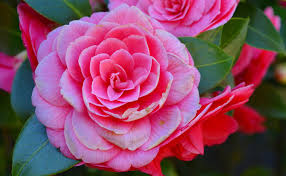| Familia | Theaceae |
|---|---|
| Origen | Japón, China, Corea |
| Floración | Finales de invierno – principios de primavera |
| Luz | Sombra parcial |
| Suelo | Ácido, bien drenado, rico en materia orgánica |
| Riego | Moderado |
| Temperatura | 7–15 °C |
| Cuidados | Aplicar mantillo, eliminar flores marchitas |
Pensamiento (Viola × wittrockiana) Invierno
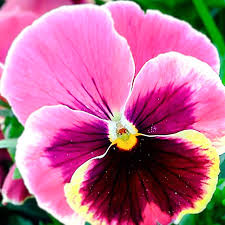| Familia | Violaceae |
|---|---|
| Origen | Europa |
| Floración | Otoño – invierno hasta primavera |
| Luz | Sol o semisombra |
| Suelo | Rico en humus |
| Riego | Moderado |
| Temperatura | Tolera heladas |
| Cuidados | Retirar flores marchitas |
Ciclamen (Cyclamen persicum) Invierno
| Familia | Primulaceae |
|---|---|
| Origen | Mediterráneo |
| Floración | Otoño – invierno |
| Luz | Luz indirecta |
| Suelo | Bien drenado |
| Riego | Desde abajo, evitar mojar hojas |
| Temperatura | 10–15 °C |
| Cuidados | Eliminar hojas secas |
Helleborus (Helleborus niger) Invierno
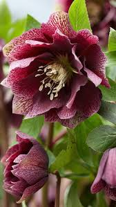| Familia | Ranunculaceae |
|---|---|
| Origen | Europa Central |
| Floración | Invierno |
| Luz | Sombra parcial |
| Suelo | Neutro o alcalino |
| Riego | Moderado |
| Temperatura | Muy resistente al frío |
| Cuidados | Eliminar hojas viejas |
Prímula (Primula vulgaris) Fin Invierno
| Familia | Primulaceae |
|---|---|
| Origen | Europa |
| Floración | Finales de invierno – primavera |
| Luz | Luz difusa |
| Suelo | Fértil y húmedo |
| Riego | Moderado |
| Temperatura | 10–16 °C |
| Cuidados | Evitar calor excesivo |
Narciso (Narcissus poeticus) Primavera
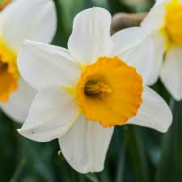| Familia | Amaryllidaceae |
|---|---|
| Origen | Europa Mediterránea |
| Floración | Principios de primavera |
| Luz | Pleno sol a sombra parcial |
| Suelo | Húmedo pero bien drenado |
| Riego | Moderado durante crecimiento |
| Temperatura | 5–20 °C |
| Cuidados | No cortar hojas hasta que se marchiten |
Lavanda (Lavandula angustifolia) Verano
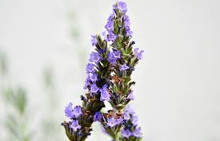| Familia | Lamiaceae |
|---|---|
| Origen | Mediterráneo |
| Floración | Verano (junio-agosto) |
| Luz | Pleno sol (6+ horas diarias) |
| Suelo | Seco, arenoso, pH alcalino |
| Riego | Escaso (resistente a sequía) |
| Temperatura | 15–30 °C |
| Cuidados | Poda anual después de floración |
Áster (Aster novi-belgii) Otoño
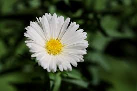| Familia | Asteraceae |
|---|---|
| Origen | Norteamérica |
| Floración | Otoño (septiembre-noviembre) |
| Luz | Pleno sol a sombra ligera |
| Suelo | Fértil, bien drenado |
| Riego | Regular (no encharcar) |
| Temperatura | 10–25 °C |
| Cuidados | Dividir matas cada 2-3 años |
2. Tipos de flores por estación
| Estación | Flores | Notas |
|---|---|---|
| Invierno | Camelia, Pensamiento, Ciclamen, Helleborus | Resistentes a temperaturas bajo cero |
| Fin invierno/Primavera | Prímula, Narciso | Transición climática |
| Verano | Lavanda | Resistentes al calor |
| Otoño | Áster | Florecen con días más cortos |
3. Cuidados básicos
| Flor | Riego | Luz | Suelo | Temperatura | Cuidados |
|---|---|---|---|---|---|
| Camelia | Moderado | Sombra parcial | Ácido | 7–15 °C | Proteger del frío extremo |
| Pensamiento | 2–3 días | Sol/sombra | Humus | Resiste heladas | Retirar flores marchitas |
| Narciso | Moderado | Sol parcial | Húmedo | 5–20 °C | No cortar follaje verde |
| Lavanda | Escaso | Pleno sol | Arenoso | 15–30 °C | Poda post-floración |
| Áster | Regular | Sol | Fértil | 10–25 °C | Dividir matas |
4. Galería de Imágenes
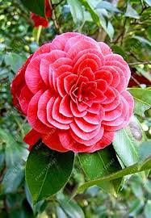
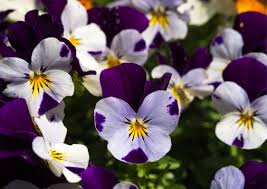
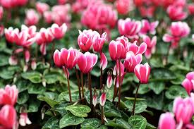
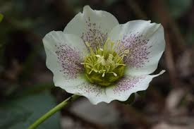
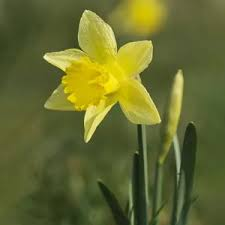
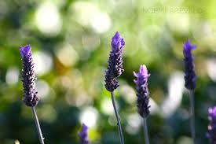
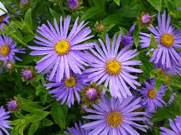